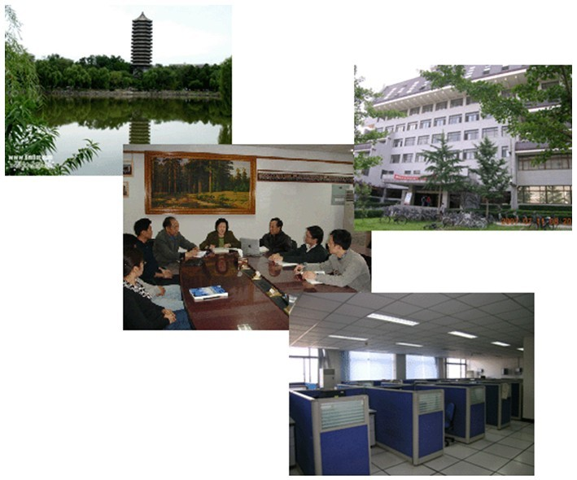
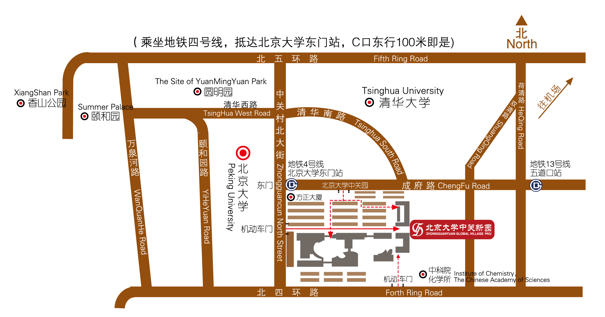

|
 |
 |
|---|---|---|
Home | Schedule | Invited Speaker Bios | Posters | Venue/Hotel Directions | |
||
2011 International Symposium on High Confidence Software (ISHCS 2011)December 16-17, 2011, Peking University, Beijing, ChinaHost: Institute of Software and Key Laboratory of High Confidence Software Technologies, Ministry of Education, Peking University |
Symposium Venue
- Peking University Science Building 2 (理科楼群2号楼), Meeting Room 2736 (the 7th Floor)
The interactive Google map below shows the walking direction from Peking University ZhongGuan XinYuan (中关新园) (marked as A on the map) to the Peking University Science Building 2 (理科楼群2号楼) (marked as B on the map) below. Note that you could walk across over the bridge above the road directly to the Peking University east-south gate instead of going north to the subway station and south to the east-south gate.
NOTE: If you stay in any PKU associated hotel, showing your hotel room card could allow you to get in a Peking University gate without gate registration. Otherwise, if the gate guards don't give you gate-registration exemption after you tell them that you will go to the campus to attend a symposium, you may need to register with your resident ID at a Peking University gate before getting in the Peking University campus.
Suggested
Hotels for Accommodation
NOTE: Without charging any registration fee, the Symposium Organizers do not provide accommodation arrangement for non-invited-speaker participants, who have to arrange their hotel stays themselves and cover their hotel cost along with their travel cost.
- Peking University ZhongGuan XinYuan (中关新园), near Peking University Campus East Gate
- Peking
University ShaoYuan (北大勺园), within Peking University
Campus (West Side)
- More Hotels Near Peking University Campus
If you stay in the Peking
University ZhongGuan XinYuan (中关新园), below is a map that you
may want to print along with the address and phone
number：北京市海淀区中关村北大街126号, Phone：(8610)62752288 so that you could
bring the printed hardcopy with you on your trip to show to the
taxi driver at Beijing airport. Note that the hotel front desk is
its Building 9 front desk (9号楼前台). Ask the taxi driver to drive
you to Building 9 of ZhongGuan
XinYuan (中关新园) when the taxi gets into the division (小区).
Near ZhongGuan XinYuan (中关新园),
there is a restaurant called HeYuan
和园餐厅 (ask the hotel front desk for the direction).
